Published: 2022-08-10
Source link: https://www.cnphotos.net/academy/show-77.html
Images Connect the World, the Era Drives Innovation
On the 18th China International Photographic Art Exhibition
Li Shufeng
In the new era, the image, as a medium of knowing and expression, plays a growing role in the connected idea of one human family. International exchange through art and images is also more and more positive. Today, as the world is unstable and uncertain, works of image art from different parts of the earth let us feel again the many common problems of humankind and the common ways we handle them, and they show how hearts can meet. This is my direct feeling after reading the works of the 18th China International Photographic Art Exhibition.
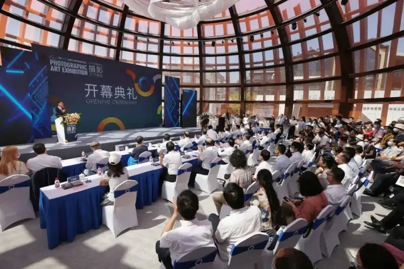
Opening ceremony of the 18th China International Photographic Art Exhibition. Photo by Zhang Shuangshuang.
As a flagship event of the China Photographers Association, the China International Photographic Art Exhibition has grown over 40 years into one of the oldest and most influential international photography shows in China. This edition received 140,701 works (266,797 frames) from 17,240 photographers in 120 countries and regions. The number of works, authors, and countries all set a record, and 294 works were selected. They are shown in three sections: the themed You and Me section, the untitled documentary section, and the untitled art section. A close look shows the following traits.
First, the You and Me section stresses the unfolding of relationships. These relations appear between people and nature, people and society, and people and people, across works, and also within a single work. What stands out are works on the relations between people and animals, comrades and partners, generations, Chinese and foreign figures, modern people and the ancients (sculpture), young and old animals, teachers and students, and men and women. These works match the theme closely and carry strong feeling. The committee chose this theme for its time. In an age of growing distance between people, opposition between people and the environment, and international confrontation, the theme holds a longing for connection and a call for exchange. Many of the works above present and fill that theme.
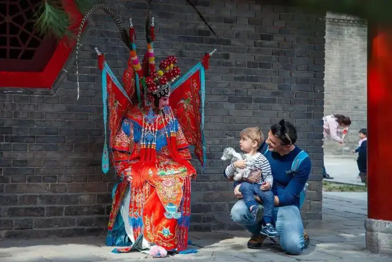
Themed section: You and Me Dialogue. Photo by Chen Hong.
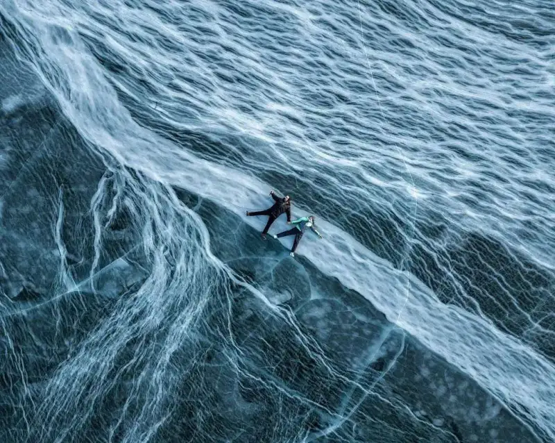
Themed section: You and Me Lying on the Ice to Admire This Fascinating Wonder. Photo by Andrei Grachev.
Second, in the untitled documentary section, the selected works cover many sides of social life across countries. They attend to how people live, record social change, and focus on people struggling through disaster. They trace individual fate and inner life, watch the lives of special groups, and take wide, long views of change in cities and villages. Some build a typology from a single place, and some follow one subject over time to shape the span of a life. Their touch on reality has breadth and depth. Within the familiar field of documentary, they cover everything and show a direct link to the present.
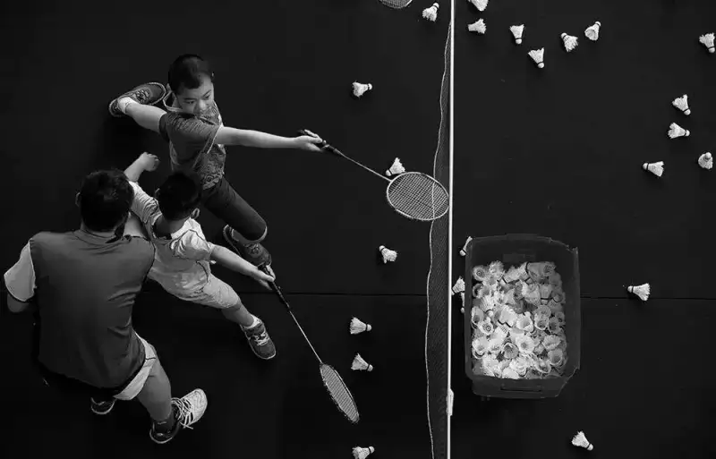
Documentary Generations of Talent. Photo by Sheng Jinsong.
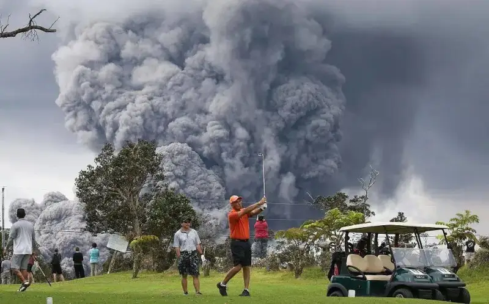
Documentary: Continuous Spray Photo by Mario Tama.
Third, in the untitled art section, the works use both straight photography and composite images, and they show a good range of methods, rich subjects, and multi-dimensional imagination. By contrast, many Chinese works carry the spirit and taste of traditional Chinese culture, while works from other countries show varied aims and fresh visual forms. In this section, the works of Chinese and foreign artists form a strong tension in comparison.
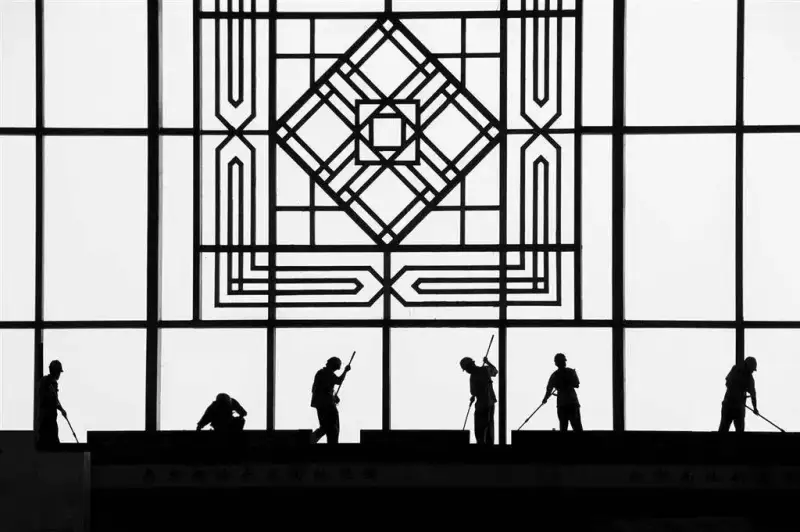
Art: City Cleaning Photo by Cheng Guoling.
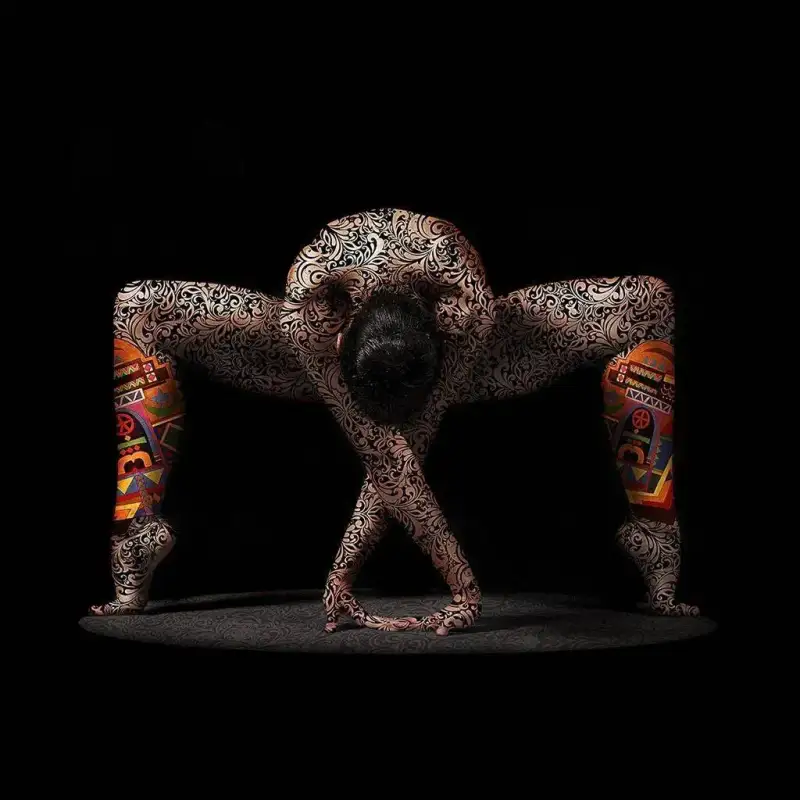
Art: Record Photo by Ayman Lotfy Mohamed.
We must admit the three sections overlap in places, which can confuse entrants and viewers. But once we know the aim of each section, the confusion clears. The themed section is a prompt of the times, while the other two keep the old categories. The first and third sections both include straight and composite images, but the emphasis differs: the first stresses thematic expression and the third stresses artistic innovation, and neither limits how the image is made. Only the second section requires an objective link between the image and the reality it shows.
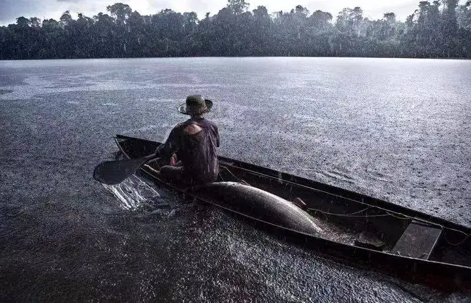
National exhibition: Brazil, the beauty of the biome The Tariana People. Photo by Alacan Alcantara.
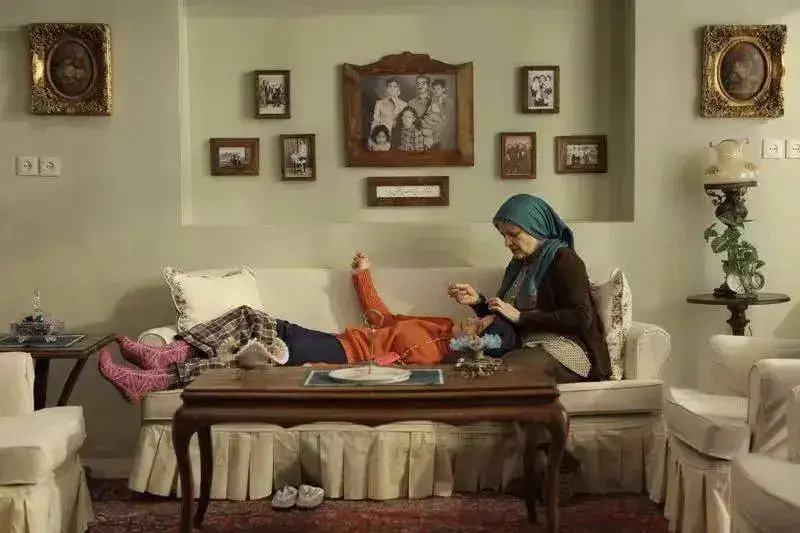
In sum, from the number of entries, the setup and running of the themed categories, and the content and form of the works, this edition, though deeply affected by the pandemic, still advanced greatly over the last in international scope and professionalism.
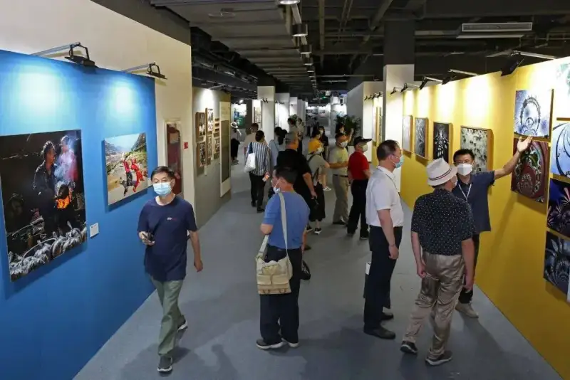
At the 18th China International Photographic Art Exhibition. Photo by Zhang Shuangshuang.
Today, as digital tools and image-making methods mature, and concepts like simulated reality and the metaverse drive new industries, where does photographic art go? The author believes the light-etching principle of photography is still our strength and will not fail. Photography as an anchor of life, freezing dramatic moments of reality, still carries high cultural value in both record and expression. Photography as a rivet of time, freezing moments, is irreplaceable in forming history and collective memory. Photography as a scalpel, dissecting the nature of things, lets us aim higher in the space of art. The abstracting and refining of three-dimensional physical space into two-dimensional image space gives us a deep visual experience and is an effective way to shape an artistic self. In short, in the new era, in the world of photography and images, art becomes bounded yet boundless. Photography should keep its core and open endless possibilities.
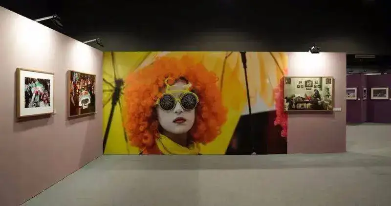
At the 18th China International Photographic Art Exhibition. Photo by Jiang Shu.
The China International Photographic Art Exhibition has run for 40 years and 18 editions. Across the selected works, we see the winding path of photographers from different cultures, the visual taste of the times, the pictured state and change of human society, and the outward forms of shared human feeling and the drawing together of inner spirits. These works hold the thought of Chinese and foreign photographers on the times, on nature, and on life, and their search for new cultural ideas and ways of expression. This search looks both inward to the field and outward to the real world.
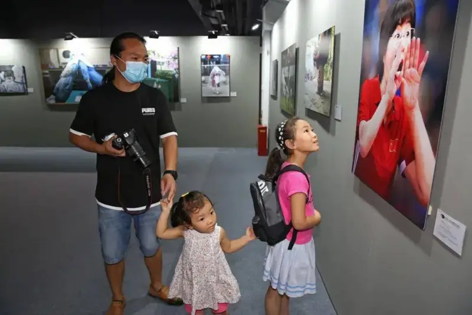
At the 18th China International Photographic Art Exhibition. Photo by Zhang Shuangshuang.
Civilizations learn from each other, and art blends. May the China International Exhibition keep working to join new Chinese and foreign ideas and terms, use the unbroken visual language of images, and contribute more to international cultural exchange and to building a community of shared future.
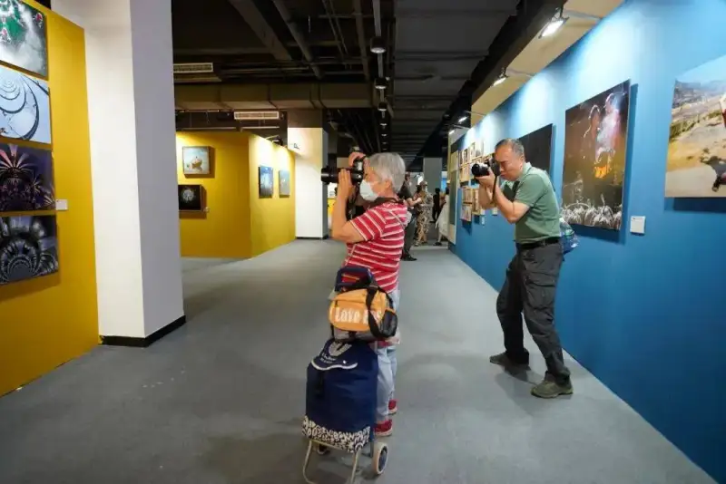
At the 18th China International Photographic Art Exhibition. Photo by Chen Liming.